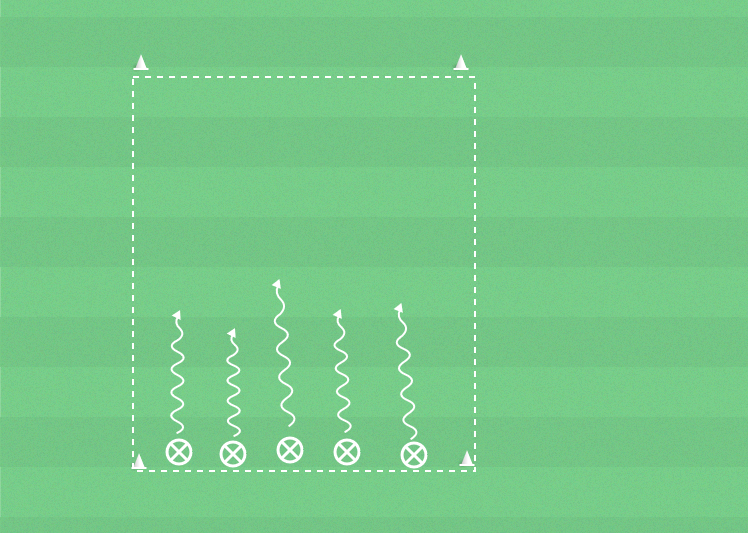

 ▶
▶
Speluppbyggnad
För att ta sig framåt i banan, komma till avslut och göra mål.
- Driv med vristen eller utsidan av foten.
- Driv mot fria ytor.
- Vänd med valfri del av foten.
Yta 15x12 m (ca), spelare, bollar, konor.
Spelplanen har fyra sidor. Spelarna ger varje sida ett namn. Till exempel efter spelare i landslaget. Spelarna driver mot den sida ledaren säger namnet på.
Stegring 1Ledaren säger namnet på nästa sida innan spelarna har hunnit fram till sidan de är på väg till. Det gäller att snabbt ändra riktning när ledaren säger en ny sida.
Stegring 2Om tid finns kan övningen ändras till att en spelare är utan boll och försöker ta bollen från de andra spelarna som driver fritt i ytan.